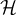

Learning is when an agent improves its performance after making observations about the world. When the agent is a computer, we call it machine learning a computer observes data, builds a model based on the data, and uses the model as a hypothesis about the world and as a piece of software that can solve problems.
We want machines to learn because the designers can’t anticipate all possible future situations, and sometimes even the designers have no idea how to program the solution themselves.
Any component of an agent program can be improved by machine learning. The improvements and techniques depend on what component is to be improved, what prior knowledge the agent has, and what data and feedback is available.
The three main types of learning are classified based on the feedback accompanying the inputs:
Supervised Learning: The agent observes input-output pairs and learns a function that maps from input to output.
Unsupervised Leaning: The agent learns patterns in the input without explicit feedback. This is commonly used in clustering
Reinforcement Learning: The agent learns from a series of rewards and punishments (reinforcements). It is up to the agent to decide which actions were responsible for the reinforcement.
In supervised learning, given a training set of example input-output pairs, generated by an unknown function f(x), we have to discover a function h that approximates the true function f. The function is called a hypothesis and it is drawn from a hypothesis space of possible functions. We say that h is a modelof the data drawn from a model class mathcalH.
Ideally, we want a consistent hypothesis, such that h(xi) = yi for every xi in the training set. When this is not possible, we look for a best-fit function The true measure of a hypothesis is how it handles inputs it has not yet seen, i.e. it generalizeswell. We say that a hypothesis is underfittingwhen it fails to find a pattern in the data, and overfittingwhen it performs well on the training data but performs poorly on unseen data.
Sometimes, we try to find the hypothesis h⋆ that is the most probable given the data:
By Bayes’ rule, this is equivalent to
Hypotheses spaces can be analyzed based on the biasthey impose, i.e. the tendency of the hypothesis to deviate from the expected value over different training sets, and the variancethey produce, i.e the amount of change in the hypothesis due to fluctuation in the training data. There is a tradeoff between complex low-bias-high-variance hypotheses and simpler, low-variance-high-bias hypotheses.
When we choose a more expressive hypothesis space , the computational complexity of finding a good hypothesis within that space increases. For example, fitting a straight line to data is easy but fitting a high-degree polynomial is harder. Hence, most work on learning has focused on simple representations. But, there has also been work on deep learning, which uses a complex representation, but the number of steps required to compute h(x) is still bounded.
Suppose we want to solve the problem of deciding whether to wait for a table at a restaurant. The output is a boolean variable representing whether we will wait. The input may have several discrete attributes, such as:
Alternate Whether there is a suitable alternate restaurant nearby
Bar Whether the restaurant has a comfortable area to wait in
Fri/Sat True on Fridays and Saturdays
Hungry Whether we are hungry right now
Patrons How many people are there in the restaurant
Price The restaurant’s price range
Raining Whether it is raining outside
Reservation Whether we made a Reservation
Type The kind of restaurant (French, Italian, Thai, etc.)
WaitEstimate Host’s wait time estimate
There are 26 × 32 × 42 = 9,216 combinations for the input. Suppose we are given 12 inputs. We have to make a best guess for the missing 9,204 cases using only these 12 examples.